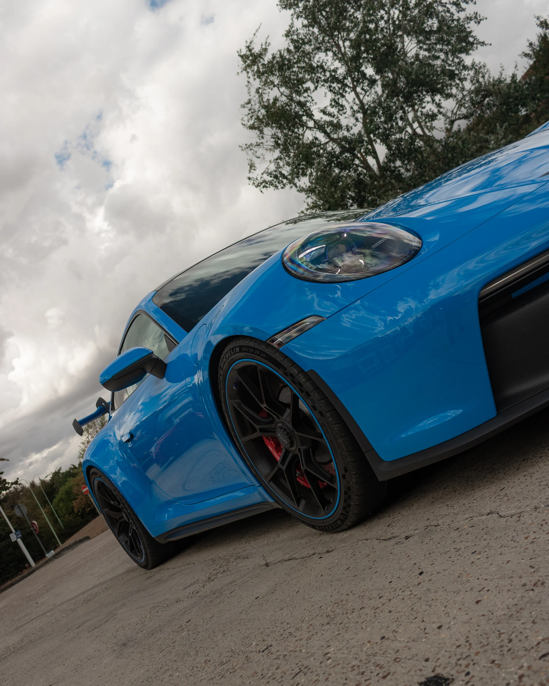
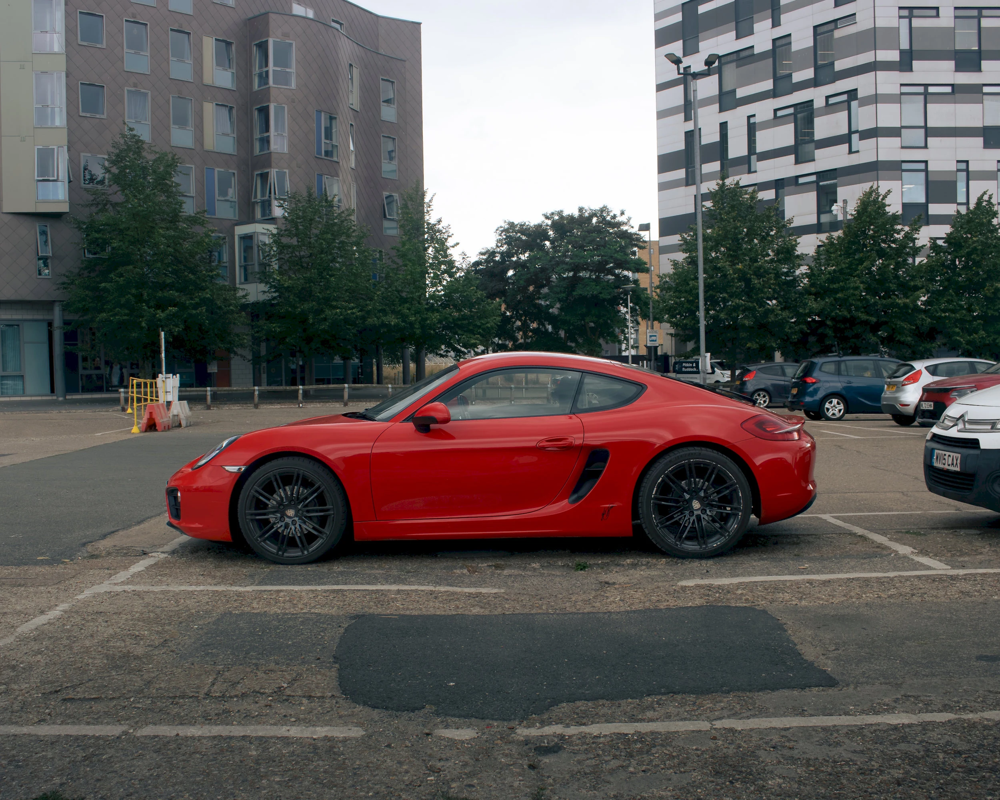
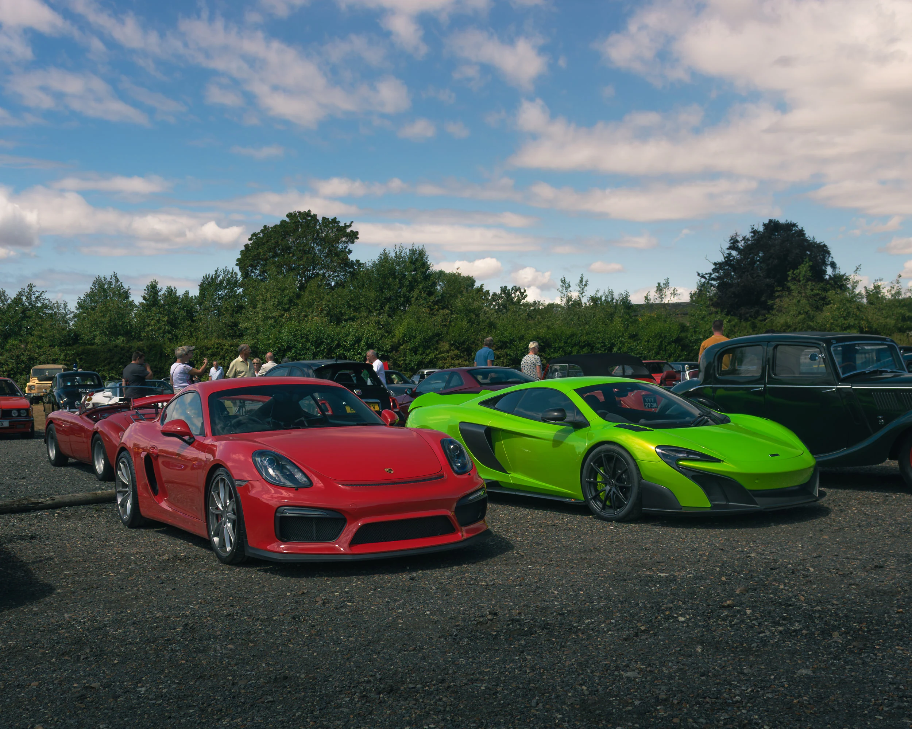
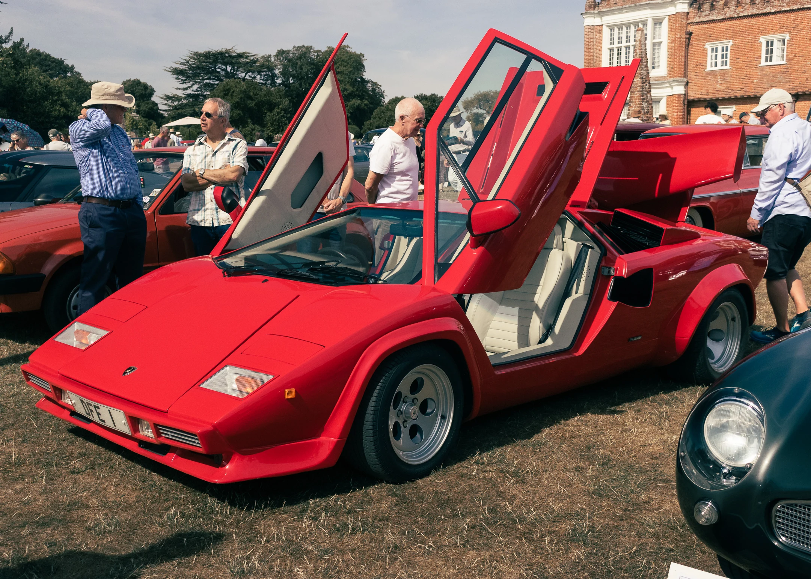

Automotive specialist
Photography focused entirely on vehicles, their design and the culture around them.

ETC_PHOTOS · Suffolk / UK
Automotive photography shaped around the vehicle, the location and the atmosphere.
The ETC_PHOTOS approach
ETC_PHOTOS is dedicated to creating considered automotive imagery that makes every vehicle feel distinct.
From one-to-one sessions to event coverage, each shoot is planned around the car and the story you want the photographs to tell.
Plan a session ↗Photography focused entirely on vehicles, their design and the culture around them.
Sessions shaped around your car, available light and preferred visual direction.
Professional coverage of automotive meets, clubs and shows throughout the UK.
Selected work
Services · Automotive photography
Every shoot responds to the vehicle, available light and the story worth capturing. The result is a varied, coherent collection rather than a repeated formula.

Private sessions
A focused photography session built around an individual vehicle. Depending on the car, lighting and available time, the finished collection can move from complete exterior views to the details that make the vehicle personal.

Shows & meets
Photography that documents both the vehicles and the atmosphere around them. Coverage follows the event as it unfolds, combining individual cars with wider moments that communicate the character of the day.
Have a vehicle or event in mind?
Plan your shoot ↗
About ETC_PHOTOS
ETC_PHOTOS is a developing automotive photography brand based in Suffolk, creating distinctive imagery for private owners and automotive events across the UK.
Connect with ETC_PHOTOS ↗